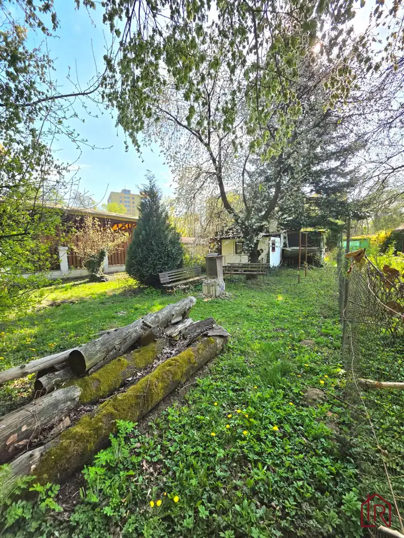
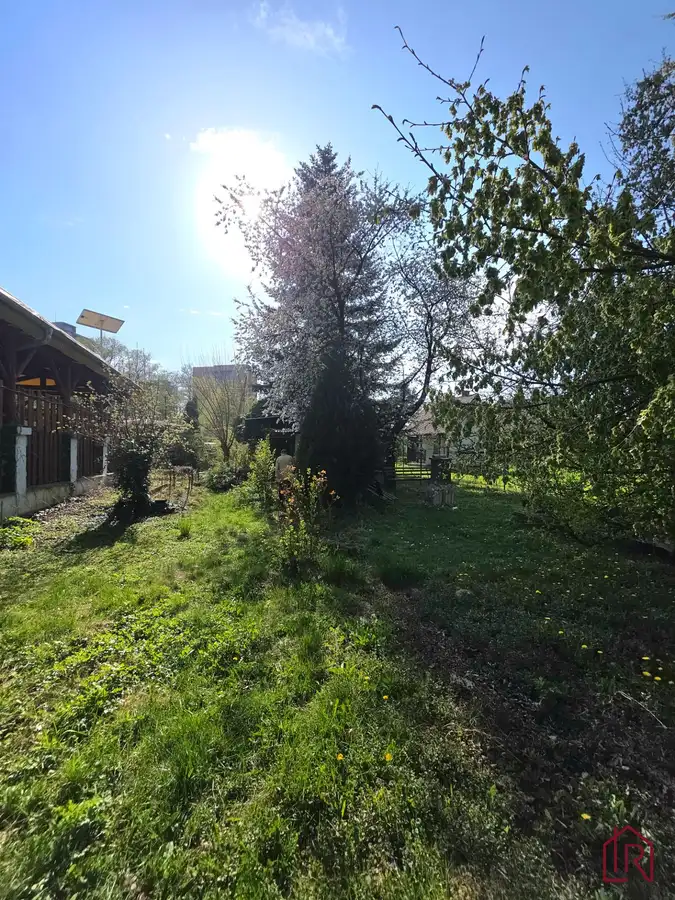
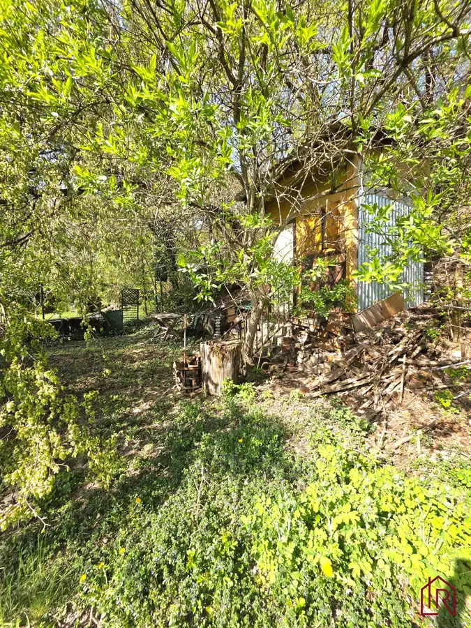
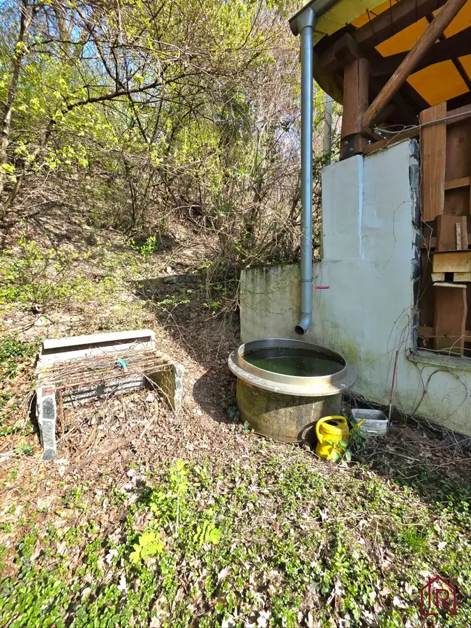

: Záhrada s chatkou, Košice – Krásna, 716 m², elektrina
mestská časť Krásna, Košice





- Plocha716 m²
- Poschodie0.
- Stavpôvodný
- Vlastníctvoosobné
O nehnuteľnosti
IMPULZ REAL a Lucia Talianová ponúkajú na predaj záhradu so staršou rekreačnou chatkou v mestskej časti Košice – Krásna. Rovinatý pozemok s výmerou 716 m² disponuje elektrinou, vlastnou studňou s kvalitnou vodou a výborným prístupom po asfaltovej komunikácii.
Nehnuteľnosť je vhodná pre záhradkárov, pestovateľov alebo záujemcov o víkendový oddych v meste. Výnimočnou výhodou je dostupnosť a poloha v zastavanom území mestskej časti Krásna.
________________________________________
TECHNICKÉ PARAMETRE A INFORMÁCIE
- DRUH NEHNUTEĽNOSTI: záhrada s rekreačnou chatkou
- LOKALITA: Košice – Krásna
- CELKOVÁ VÝMERA POZEMKU: 716 m²
- ROZMERY POZEMKU: približne 15 m x 53 m
- TERÉN: rovinatý
- PRÍSTUP: asfaltová komunikácia
- VLASTNÍCTVO: osobné
- ELEKTRINA: áno
- VODA: vlastná skružová studňa, hĺbka 4 m
- KVALITA VODY: vhodná na pitné účely
- ODPAD: bez napojenia na kanalizáciu
- MESAČNÉ NÁKLADY: približne 80EUR ročne
- CHATKA: evidovaná na katastrálnej mape
- SÚPISNÉ ČÍSLO: nie je pridelené
- CELOROČNÉ BÝVANIE: nie
________________________________________
DISPOZÍCIA CHATKY
Rekreačná chatka pochádza zo 70. rokov a poskytuje základné zázemie pre oddych a záhradkárske využitie.
- kuchynka: s prívodom vody
- spálňa: samostatný priestor na prenocovanie
- čiastočné podpivničenie vhodné na skladovanie
- ohrev vody: elektrický bojler
________________________________________
STAV CHATKY A STAVIEB
Chatka je v pôvodnom stave a je určená predovšetkým na sezónne využívanie. Budúcemu majiteľovi ponúka možnosť rekonštrukcie podľa vlastných predstáv.
- základy: murované
- konštrukcia: prefabrikované dielce
- strecha: plechová krytina
- rok výstavby: približne 70. roky
- druhá stavba: samostatná drevostavba so samostatným vstupom
- hospodárska stavba: pôvodná náradovňa vhodná na uskladnenie náradia a záhradnej techniky
________________________________________
POZEMOK A ZÁHRADA
Pozemok je dlhodobo udržiavaný a ponúka príjemné prostredie na oddych aj pestovanie.
- ovocné stromy: čerešňa, hruška, jabloň a višňa
- dostatok priestoru na pestovanie zeleniny a ovocia
- rovinatý terén: jednoduchá údržba a široké možnosti využitia
- dostatok súkromia v zadnej časti pozemku
- studňa s dostatkom vody počas celého roka
________________________________________
LOKALITA A OKOLIE
Mestská časť Krásna patrí medzi obľúbené lokality pre rekreačné a záhradkárske využitie. Veľkým benefitom je jednoduchá dostupnosť z centra Košíc a kompletná občianska vybavenosť v okolí.
- DOSTUPNOSŤ: pohodlný prístup po asfaltovej ceste
- OBČIANSKA VYBAVENOSŤ: v dosahu služby a obchody mestskej časti Krásna
- REKREÁCIA: vhodné prostredie na oddych, záhradkárčenie a víkendové pobyty
- REŠTAURÁCIA LETNÁ ZÁHRADKA: nachádza sa v bezprostrednom susedstve pozemku
- DETSKÉ IHRISKO: priamo susedí s hranicou pozemku
Lokalita ponúka živé a bezpečné prostredie s občerstvením a službami v bezprostrednej blízkosti.
________________________________________
NÁZOR MAKLÉRA
Táto nehnuteľnosť osloví najmä klientov, ktorí hľadajú veľký rovinatý pozemok s výbornou dostupnosťou v rámci Košíc. Medzi najväčšie benefity patrí elektrina, vlastná studňa s kvalitnou vodou, existujúca stavba zakreslená na katastrálnej mape a množstvo rodiacich ovocných stromov. Oceňujem aj šírku pozemku 15 metrov, ktorá ponúka komfortné využitie celej záhrady. Vzhľadom na blízkosť detského ihriska odporúčam nehnuteľnosť najmä klientom, ktorí hľadajú aktívne záhradkárčenie a víkendové využitie, pričom im neprekáža sezónne rušnejšie prostredie.
________________________________________
KONTAKT: Pre bližšie informácie kontaktujte kedykoľvek certifikovaného rodinného realitného makléra: Lucia Talianová, , (certifikovaný maklér NARKS - Národná asociácia realitných kancelárií Slovenska).
Viac ako nehnuteľnosť. DOMOV
V Impulz Real spájame profesionálny rozum s ľudským srdcom. Zabezpečíme Vám nielen kompletný a bezpečný servis (advokát, financovanie, energie) – kvalita je náš štandard, ale hlavne pochopenie pre Váš príbeh. Pomôžeme Vám s predajom aj Vašej nehnuteľnosti, prípadne nájsť domov, ktorý si zamilujete, a postaráme sa o Vás počas celého procesu.
„Sme realitní experti so zmyslom pre rodinu.“
IMPULZ REAL – Vaša Rodinná Realitka, ktorej DÔVERUJETE
Parametre
- Rozloha pozemku
- 716 m²
- Poschodie
- prízemie
- Vlastníctvo
- osobné
- Stav
- pôvodný
- Status
- aktívne
- Voda
- studňa
- El. napätie
- 230/400V
- Plyn
- nie
- Kanalizácia
- nie
- Internet
- nie
- Terén
- rovina
- Prístupová cesta
- asfaltová cesta
- Dátum zverejnenia
- 2026-06-02
Kde to je
Mohlo by Vás zaujímať
 Rodinné domyNové
245 000 €Rezervované, Celoročné bývanie pri Košiciach, pozemok 901 m2
Okolie
4-izbový150 m²
Rodinné domyNové
245 000 €Rezervované, Celoročné bývanie pri Košiciach, pozemok 901 m2
Okolie
4-izbový150 m²
 Nebytové priestoryNové
150 000 €: Investičný priestor, Lorinčík, 4,3 % výnos
mestská časť Lorinčík, Košice
52.23 m²
Nebytové priestoryNové
150 000 €: Investičný priestor, Lorinčík, 4,3 % výnos
mestská časť Lorinčík, Košice
52.23 m²
 BytNové
249 900 €4 - izbový byt, Košice Terasa, Bernolákova, 82 m²
Západ, Košice
4-izbový78 m²3. podlažie
BytNové
249 900 €4 - izbový byt, Košice Terasa, Bernolákova, 82 m²
Západ, Košice
4-izbový78 m²3. podlažie